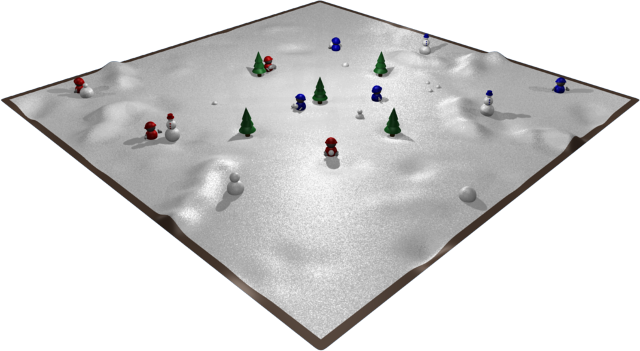

ACM Queue Magazine is offering an online programming competition based on the 2009 International Collegiate Programming Competition (ICPC) Challenge problem. Participants will get to code a player and compete with others in the game of Capture. Preliminary matches during the one-month coding phase will let you know how well your player is doing. A final double-elimination competition among all the submitted players will decide whose player is best.
Coding and preliminary matches will run from January 10, 2010 to the end of the day on February 6 (all times GMT).
The ICPC Challenge game, Icy Projectile Challenge, is played in an environment that looks something like the following figure. A red player and a blue player compete on a snow-covered 31 × 31 field. Each player controls a group of children, who can pick up the snow, move it around, make snowballs, hurl them at each other, and stack snowballs to form snowmen. Players earn points by placing snowmen strategically, and by hitting their opponents with snowballs. The game rules describe how to control your team, how to score points and how to win.
Your player will be implemented as a separate program, in C++, C#, Java or Python. You will interact with the game by reading information about the game world from standard input and writing your next move to standard output. The sample players can be a quick way for you to get started writing your player and interacting with the game. A more detailed description of the execution environment explains the input and output format for your player as well as other rules for what your player can do.
Once you have a player written, you can run it by starting up the game and pointing it to your player's executable. If you have written a player in C++, you can run it against one of the sample players using a command like:
java -jar icypc.jar -player cpp myPlayer -player java -cp java_example Hunter
If your player is implemented in Java, you can run it against one of the example players using a command like:
java -jar icypc.jar -player java -cp java_example Planter -player java MyPlayer
The more detailed usage instructions describe more options for starting up the game, including how to run the 3D visualization, how to generate trace files and how to debug your player during execution.
During the coding phase, players can access the competition through the queue site at: http://queue.acm.org/icpc/ From this page, participants will be able to register for the competition, login to the submission system, submit player code and see how they are doing in preliminary matches. The latest working submission is considered the participant's current player. The final tournament and the nightly preliminary matches will use the most recently submitted player code that successfully builds.
All source code and supporting files for a player must be submitted at once. From the submission interface, select each source file that's part of your player, and then press the "Upload Files" button to upload the whole thing. If you forget to submit an important file, you will need to re-submit everything to have a working player.
The Queue ICPC Challenge website, http://queue.acm.org/icpc/, will provide regularly updated information during the coding phase of the competition. If corrections or clarifications are needed, they will be linked from here.